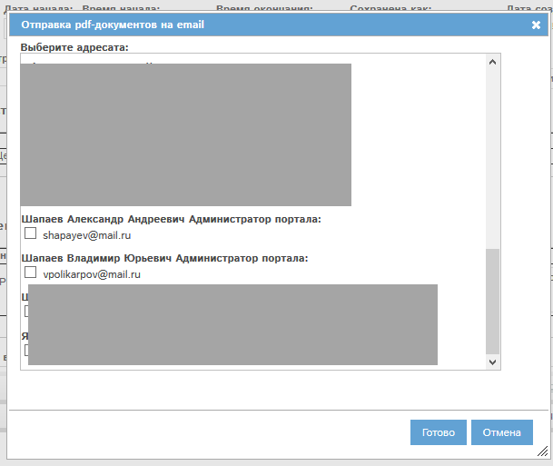

Рассмотрим работу кнопки . При ее нажатии откроется окно выбора адресата:
Список доступных Вам звонков находится в разделе "Планировщик", на вкладке "Звонки":
Рис. Реестр звонков.
Наиболее важные графы реестра:
Аналогично прочим реестрам CRM GYDEX, доступна поиск и сортировка по определенным полям.
Для создания нового звонка необходимо нажать кнопку "Создать событие" над реестром. Откроется окно создания события:
Также Вы можете нажать кнопку "Новый звонок" на странице "Быстрые действия".
Рис. Окно создания события планировщика.
В окне необходимо отметить пункт "Звонок", затем нажать ОК. Откроется форма создания звонка:
Рис. Форма создания звонка.
Блок 1: входящий или исходящий звонок. Нужно выбрать тип звонка. Входящий звонок можно выбрать только фактически совершенный, т.е. дата и время в блоке 2 должны быть в прошлом.
Блок 2: Дата и время звонка - необходимо указать эти данные для звонка. По умолчанию выбрано сегодня и текущее время.
Блок 3: звонок совершенная/запланированная: в зависимости от времени и даты, выбранных в блоке 2, блок 3 выбирается автоматически. Если звонок был в прошлом, то блок принимает значение "звонок совершенный", иначе - "звонок запланированный".
Блок 4: сотрудник. В этом поле необходимо выбрать сотрудника, который совершал звонок. По умолчанию выбраны Вы. Если требуется выбрать другого сотрудника, необходимо нажать кнопку "..." в этом блоке и осуществить выбор.
Блок 5: Контакт звонка. Необходимо выбрать контрагента и контакта, которому звонили или который звонил. Для выбора нажмите кнопку "...". Выбор проводится из справочника контрагентов и их контактов в программе.
Блок 6: Результат звонка. Здесь необходимо указать результаты звонка. Если звонок создается как совершенный, то заполнение этого поля обязательно.
Блок 7: Напомнить мне. Позволяет создать напоминание о звонке в выбранный период.
Кнопка "Создать звонок" (8) позволяет создать звонок и перейти в реестр звонков.
Кнопка "Создать звонок и остаться в карте" (9) позволяет создать звонок и остаться в его карте.
Кнопка "Отмена" (10) - закрытие формы без сохранения данных в программе.
Заполним все указанные блоки. Карта звонка примет вид:
Рис. Карта звонка заполнена.
Нажмем "Сохранить звонок и остаться в карте" (9). Откроется форма просмотра/редактирования звонка.
Рис. Карта звонка.
В нашем примере звонок сохранена как запланированный, поэтому он перешел в статус "запланирован" (1), и у него автоматически утверждено заполнение (3).
Если звонок сохранили бы как совершенный, то он перешел бы в статус "выполнен", и у него автоматически утвердилось бы выполнение (4).
Когда у звонка утверждено заполнение (3), то активными остаются поля "напомнить мне" (2) и "результат звонка". Все остальные поля неактивны. Если необходимо скорректировать в них данные, то нужно снять утверждение заполнения звонка.
У карты с утвержденным заполнением становятся активными кнопки  (получить печатную форму в pdf-формате) и (отправить печатную форму в pdf-формате на электронную почту).
(получить печатную форму в pdf-формате) и (отправить печатную форму в pdf-формате на электронную почту).
Рассмотрим работу кнопки . При ее нажатии откроется окно выбора адресата:

Рис. Окно выбора адресата.
Для отправки печатной формы на электронную почту необходимо отметить галочками требуемые адреса сотрудников и нажать кнопку "Готово".
Утвердим выполнение нашего звонка. Заполним поле "Результат звонка", т.к. без его заполнения программа не позволит утвердить выполнение.
Затем отметим галочку "Утверждаю выполнение" и нажмем "Сохранить и остаться". Форма примет вид:
Рис. Выполнение утверждено.
Звонок перешла в статус Выполнен. Все поля недоступны для заполнения.
Для звонков в статусе "Запланирован" (т.е. звонков, у которых утверждено заполнение, но не утверждено выполнение) доступна функция напоминаний. Вы можете установить себе напоминание об этом звонке.
Для этого в карте звонка нужно отметить галочку "напомнить мне", указать дату напоминания и время напоминания, и затем сохранить карту:
Рис. Установка напоминания о звонке.
В указанное Вами время Вы получите в программе напоминание о звонке:
Рис. Напоминание о звонке.
В окне напоминания можно выбрать дальнейшие действия:
При выборе вариантов 1-2 нужно нажать кнопку Готово в окне напоминания.
Если Вы устанавливаете напоминание при первичном создании звонка, то напоминания в выбранное вами время будут приходить сотруднику, выбранному в блоке "Сотрудник" карты звонка.
Все основные реестры программы могут быть индивидуально сконфигурированы: вы можете указать, какие колонки и в какой последовательности вы желаете видеть. Всегда можно вернуться к стандартному виду реестра. Рассмотрим работу этой функции на примере реестра контрагентов.
Для настройки реестра нажмите кнопку  :
:

Откроется окно настройки. Слева указаны доступные колонки (1), справа - колонки, которые показаны в реестре (2):

Для перемещения столбцов между блоками 1 и 2 выделите требуемые столбцы (можно выделить несколько столбцов, нажав и удерживая ctrl при их выделении), и нажмите кнопку > для перемещения столбцов из доступных в видимые, либо кнопку < для перемещения из видимых в доступные столбцы.
Доступна сортировка видимых столбцов (в блоке 2). Для того, чтобы поднять или опустить столбец или их группу, выделите требуемые столбцы и нажмите  для подъема или
для подъема или  для спуска столбца.
для спуска столбца.
Для того, чтобы сохранить внесенные изменения, нажмите Готово. Реестр обновится, и будут показаны выбранные вами столбцы в выбранной вами последовательности.
Для того, чтобы восстановить стандартный вид реестра, нажмите кнопку "Сделать стандартными".